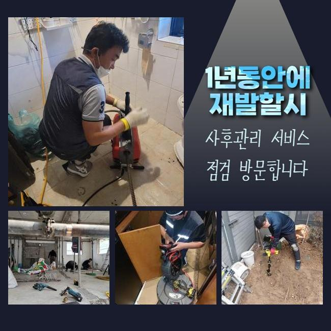
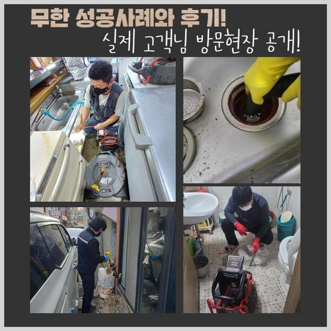
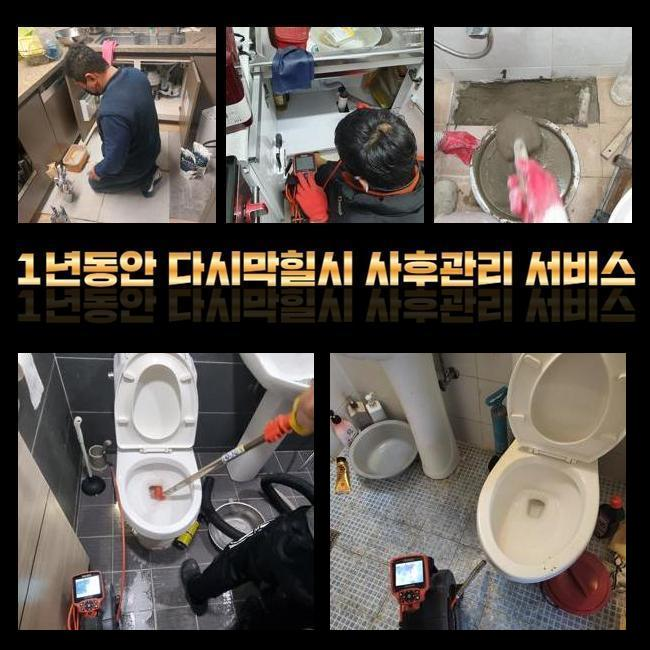
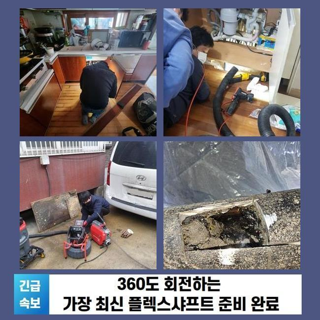
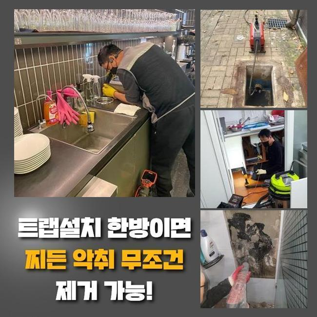

🏠 부평구 십정동욕실뚫음 갈산동 맨홀막힘 물샘전문업체
용인 갈산동 싱크대막힘 전문 시공 후기

📋 작업 개요
- 위치: 용인 갈산동, 갈산동, 용인
- 서비스 유형: 싱크대막힘, 하수구막힘, 배관막힘, 맨홀막힘, 누수수리, 역류해결, 뚫는업체
- 작업 일시: 2025. 4. 10. 2:56
- 업체명: 하수구수사대 (010-5615-2118)
🔍 문제 상황
부평구 십정동욕실뚫음 갈산동 맨홀막힘 물샘전문업체
금번장소는 싱크대배관에서 악취문제가 일어났는데 고객께선 자가적으로 뚫는것이 쉽지않다고 하셔서 방문해드렸어요
악취현상이 싱크대부터 부엌전체에서 퍼지게된 경우라고 말씀해주셨죠
어떤이유로 싱크대냄새가 발생하게된 부분과 어떤식으로 해결해야할지 안내드리도록 해볼게요
해결해드리기 위해서 여러가지의 전문도구를 준비해서 출동했습니다 부엌으로 이동해보니 퀴퀴한 배수구냄새가 진동하고 있는것이 느껴졌죠
현장점검을 진행했더니 물빠짐이 정상적이지 않은것이 확인되었죠
고객께 현재상태를 물어보았더니 일주일전부터 이러한 현상들이 발생했는데 막힘문제로는 이어지지는 않았기때문에 방치해두셨죠
부엌에서 오취가 일어났다면 씽크대막힘이 발발했을 확률자체를 배제하면 안된답니다
싱크대밑쪽은 악취정도만 심했고 오염물질이 넘치고있는 상황까지는 아니었어요
다이소에서 살수있는 악취제거 용품들을 사용해 보았지만 악취증세가 없어지지않고 지속되었고 냄새원인에 대해서 알아내기 위해선 배수구내부를 점검해야 하죠

🔎 원인 분석
💡 전문가 진단: 정밀 진단 장비를 사용하여 슬러지의 고착 여부를 판명하고 타격/세척 작업을 실시했습니다.
그치만 배관안쪽은 육안을통해 내부속까지 파악하는게 불가하여 전문기계가 동원되어야 해요
사전에 구비해둔 카메라장비를 투입시켜 하수관내부와 오염물의 형태까지 파악해보기로 작업방향을 설정했어요
카메라장비는 유연하게 이루어져있어 어떤 구조든 어렵지않게 진입할수있죠
진입하게되면 잔해물의 성질과 막힘증세가 발생된 지점까지 여러가지의 상태를 체크할수 있답니다
효율적인 오염물 제거과정에 필수적인 장비라고 해도 무방합니다
배관안으로 카메라장비를 투입한뒤 막힌곳이 있는지 살펴보면서 악취근원이 무엇인지 알아내는 작업계획이 이루어졌어요
배수구 초입부근에선 오염물질들이 보이지 않았고 깊숙한 부분으로 진입하자 배관내벽에 슬러지들이 고착된 상황인것이 내시경으로 파악되었습니다
막고있는 이물질은 주방쪽에서 빈번히 발견되는 이물중 하나고 음식조리나 그릇들을 닦을때 배출이되는 기름기들로 형성이 됩니다
하수관내벽에 끈적한 상태로 붙으며 크기자체가 커질뿐 아니라 딱딱해지기에 통로를 점점 막기 시작하다 시간흐르며 배관막힘을 발생시키는 것이죠
싱크대가 막힌곳을 작업하면서 많이 봐왔던 이물들로 말끔하게 소거시키려면 분해시키는것이 효과적인 방법이에요

🔧 작업 과정
샤프트기계를 사용해보기로 결정해주었어요 샤프트기는 줄끝에 사슬성질의 체인노커가 부착되있죠
달려있는 사슬이 하수도관 안속에서 회전하면서 이물을 작은형태로 분쇄시키고 내벽쪽에 접착된 고착물들을 제거한답니다
단단한 상태로 굳어져있는 이물질들을 소거하는 작업에서 유용히 활용되며 배관작업시 필수적으로 사용하는 장비에요
앞서 설명드렸던 도구를 하수구속에 넣어서 덩어리진 이물질을 반복해주며 분쇄해내는 과정이 진행됐어요
석회회가 진행된 이물질들은 한번에 제거되기란 어렵습니다
배관카메라를 넣은후 모니터를 통해 잔해물 위치를 파악하며 반복적으로 분해공정을 착수했는데요
분쇄가 완료되어 잘게 분쇄된 이물들은 배수관 바닥내에 가라앉으므로 석션기구로 전체적으로 흡입하여 외부로 배출해주었어요
외부쪽으로 빼냈던 이물질들을 확인해보고자 석션통을 오픈하여 배출완료된 이물의 수량을 알아봤습니다
예상보다 많은량이 아니긴 했지만 해결하지않고 내버려 두었다면 오염물질이 연속적으로 늘어나게 되었을 것이며 막히게되는 현상은 피할수없고 역류문제도 나타날 확률이 높아요
분쇄작업과 배출작업까지 완료되니 셀프점검으로 처리되지 않았었던 막힘증상들이 확실히 해소된게 느껴졌답니다
모든 공정들이 끝나기전에 배수점검을 시행하는데요
수전을 켜서 싱크대 배관속으로 들이부어 검수를 진행했는데 아무일없이 개운하게 흘러가는걸 확인했답니다
이런일들은 여러의 원인들로 발생하게되고 이유에 따른 적합한 조치가 이뤄져야 명백하게 뚫을수가 있는데요
막힘징조가 나타났을때 전문가를 불러서 조치를 취하는것이 정확한 해결책입니다
업체호출시 AS부분과 비용과 관련된 부분들도 자세하게 알아보아야 하겠죠
저희업체의 경우엔 일년동안 추후관리를 진행합니다


✅ 작업 완료
이밖으로도 전국 어디든 한시간내로 방문드리고자 노력하고 있죠
투명히 수리하는 과정들을 공개하고 있으며 고객님께서도 같이 작업과정과 결과물에 대해서도 확인하실수 있어요
재차 강조드리지만 막힘사태를 내버려두거나 무리해서 셀프처리를 취하신다면 되려 막힘상태를 심각하게 만들수 있으니 과도한 조치는 삼가주세요!
이런 문제와 관련해서 궁금증들이 해소되지 않으셨다면 시간관계없이 문의바래요


⚠️ 베란다 누수 및 방수 관리 방법
- ✅ 비가 많이 올 때 창틀 주변이나 아래층 천장에 얼룩이 생기는지 정기적으로 확인해 보세요.
- ✅ 우수관 주변 실리콘 마감이 들뜨거나 깨진 틈새가 있는지 손상 여부를 수시로 체크하세요.
- ✅ 베란다 바닥 타일의 줄눈(메지)이 소실되면 그 틈으로 물이 침투하여 누수가 유발됩니다.
- ✅ 누수 의심 증상 발견 시 방치하면 아래층 손실이 커지므로 즉시 전문가의 진단을 받으십시오.
💡 핵심 정리
- 확실한 장비 작업(내시경 점검 및 샤프트 스케일링)으로 원인을 뿌리 뽑습니다.
- 작업 후 1년 이내에 동일한 부위 재발 시 100% 무상 A/S 서비스를 보장합니다.
- 서울 · 경기 · 인천 전 지역에 24시간 언제든 긴급 출동할 수 있도록 항시 대기 중입니다.
❓ 자주 묻는 질문 (FAQ)
🚨 용인 갈산동 싱크대막힘 문제로 고민이신가요?
정확한 원인 진단과 확실한 시공으로 재발 없는 해결을 약속드립니다.
24시간 긴급 출동 | 서울 · 경기 · 인천 전지역 | 1년 내 재발 시 무상 A/S